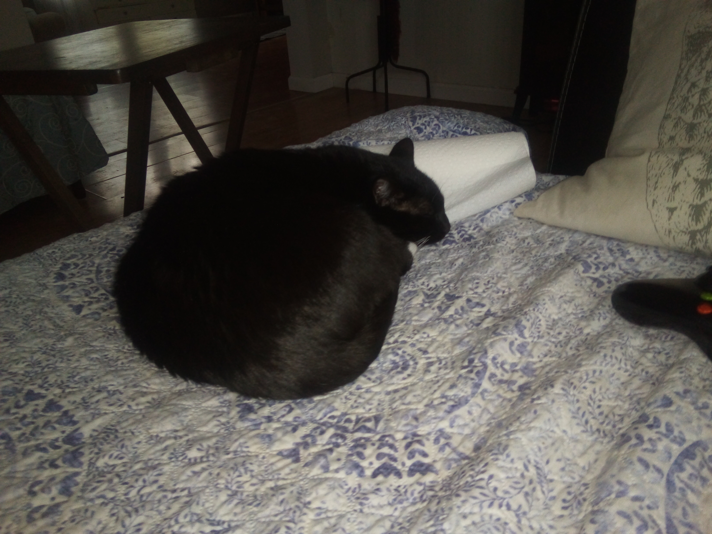

CAT.HTML! INDEX | CONTACT | ABOUT US
My name is Fraser Kaye,
and THESE are my cats.
 |
Certified cats (these are not dogs) |
|
More than 2 images in total |
|
3 pages of content! |
CAT.HTML
is the
leading page on the web for finding images of these two cats in
particular. No other place on the web will provide you with this
in-depth look into the life and history of the stars of this site,
Frankie and Galahad like CAT.HTML
will. Enjoy your stay!
|  |
Music to Listen to While Looking at Cats:
Carefree Kevin MacLeod (incompetech.com) Licensed under Creative Commons: By Attribution 3.0 License https://creativecommons.org/licenses/by/3.0/
CAT.HTML is not affiliated with anything at all, except maybe
Wayne Community College. It is also not a registered trademark, so anyone is free
to call something "CAT.HTML." I'm not going to stop you. Published by Fraser Kaye in 2022.